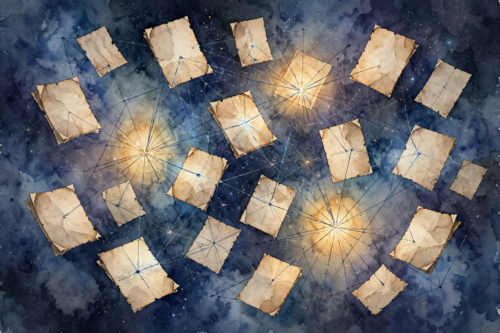
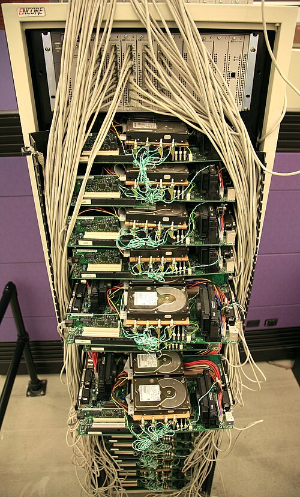
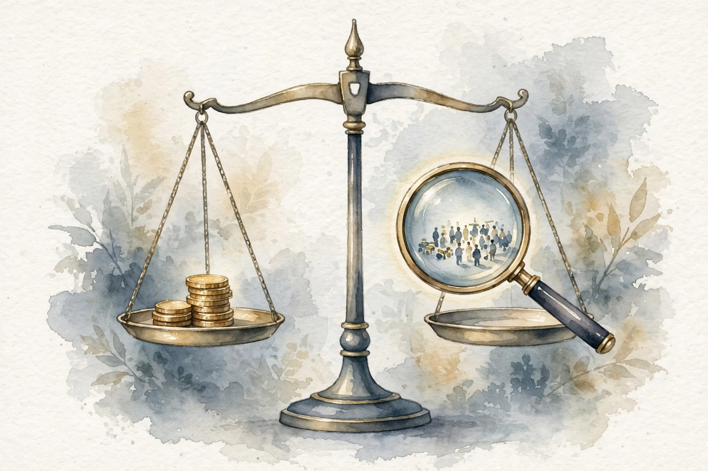
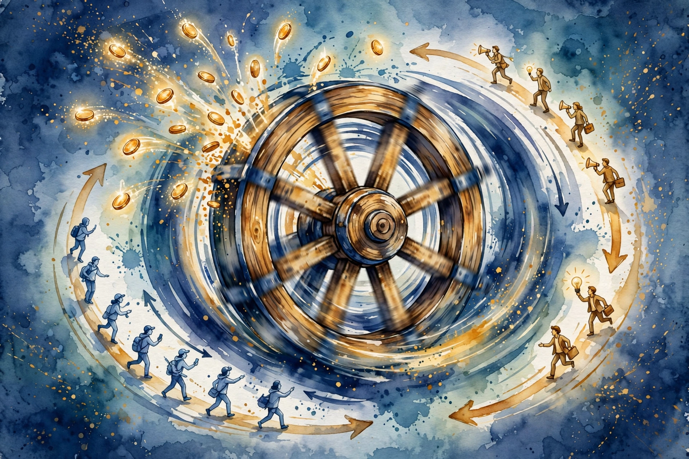

Acquired · Episode 5 · Companion
Google Part I: Origins of Search
Google was not the first search engine. It was the last. A citation-graph insight, a stolen-and-fixed business model, and a $100 million bet the company did not have built the best business in human history. This companion follows the episode chapter by chapter.

Illustration. Links are votes: the citation graph behind PageRank. AI-generated watercolor.
Listen. The official Acquired episode audio (about 3 hr 20 min). Times below are proportional estimates from the transcript, which carries no timestamps.
The Wisdom Index: every nugget in this companion
- Ambition is the founding technology
- Rank by what others say
- The check that forced the company
- One plus one equaled 100
- Distribution is bought, not earned
- Steal the model, fix the flaw
- The harmonious auction
- Bet the company on arithmetic
- Buy the default
- Scale that grows revenue, not just cuts costs
- Today's sacrilege is tomorrow's business model
Source fact A claim from the episode transcript. Interpretation My read on what it means. Times marked ~ are proportional estimates from word position, since the transcript has no timestamps.
~00:12
Not Accidental Billionaires
Source fact The episode opens by killing a myth: the perception that Larry Page and Sergey Brin were hapless academics, weak on business, and that Google was a research project that became the best business of all time by accident. The hosts say that is wrong. Everyone they interviewed in research described the two as hugely ambitious, for the business as well as the product.
Probably when I was 12, I knew I was going to start a company eventually.
Larry Page · Episode ~00:14
Larry's fuller quote: he wanted to make the world better, and to do that you need to do more than just invent things. Later he added that you need to use business and entrepreneurship to make these things real, since it is not enough just to invent them. Ben's reading: companies are the vehicles that bring ideas to the masses.
The timing was extraordinary. From 1993 to 1996, the web grew from 130 sites to more than 600,000, a 723 percent growth rate year over year for four years, per John Battelle's book The Search. Larry and Sergey watched the largest communication phenomenon in history compound in real time, from inside Stanford's computer science department, where they met in the fall of 1995 and argued constantly before becoming true partners.
Nugget 1 · Founders
Ambition is the founding technology
What happened. Larry knew at 12 that he would start a company, and that invention alone was not enough. Everyone the hosts interviewed described both founders as hugely ambitious for the business, not just the product.
Why it matters. The "accidental billionaire" story flatters observers and misleads founders. Google's business outcomes were aimed at, not stumbled into. Ambition set the ceiling before any technology did.
The principle. Do not build the product and hope a business appears. Decide the business is the point, early, and say it out loud.
Nugget 4 · Partnerships
One plus one equaled 100
What happened. Larry and Sergey held equal equity and built a real true partnership that lasted decades. The hosts compare its rarity to Jensen, Chris, and Curtis at Nvidia, noting that even there it became Jensen over time, and that Warren Buffett and Charlie Munger were never both full-time in one company.
Why it matters. Decade-scale partnerships with shared ownership are the rarest input in the episode's whole story. Everything downstream, the AOL bet, the IPO fight, the AI era, needed both of them still in the room.
The principle. Equal ownership plus real partnership compounds. If you find a true partner, structure for decades, not for the seed round.
~00:18
Links Are Citations
Source fact The core insight came from an old field: the study of academic citations. Scholars had long ranked papers by who cites whom. The leap: a hyperlink is the exact same model as an academic citation. A link from page A to page B is A's vote that B matters. And links carry something citations do not: anchor text, the clickable words the linker chooses, which are usually a better description of the target page than anything the page says about itself. Google's ranking combined the citation graph with anchor-text descriptions, and it worked.
The underpinnings were brutal: crawling the whole web, storing the graph, computing the scores. Larry wrote the first PageRank implementation and crawler in Java. It was super buggy and barely worked. They tried to sell the technology to Yahoo for $1 million. Yahoo said no.
The episode stresses two underappreciated points. Ranking was only one of three innovations. The others were speed and the clean page. And Google's aversion to paid inclusion, refusing to pollute organic results with paid placement, served it enormously. Trust in the results was the product.
Nugget 2 · Insight
Rank by what others say
What happened. PageRank moved ranking from what a page says about itself, which owners can stuff, to what the web says about it through links and anchor text, which is much harder to fake. Keywords belong to the page owner. Inbound votes belong to everyone else.
Why it matters. The same trick generalizes: resumes, vendors, restaurants, research. Self-description is gameable. Outside citations are not. Every ranking system should weight the two differently.
The principle. For any decision you rank, build two lists: what the candidate claims, and what others say. Weight the second one more.
~00:39
The $100,000 Check to a Company That Did Not Exist
Source fact At 8 a.m. one morning, Larry and Sergey demoed Google to Andy Bechtolsheim at Dave Cheriton's house in Palo Alto. Andy was in a hurry. He loved it. He said he was in for $100,000 and went to get the check from his car, though they had only wanted advice, not money. The check was made out to "Google Inc." Google Inc. did not exist. No documents, no valuation. Andy told them to figure it out. That check forced the company's founding.
The full seed round: $1 million at a $10 million post-money valuation, from four investors: Andy Bechtolsheim, Dave Cheriton, Ram Shriram ($250,000), and Jeff Bezos. Bezos asked Ram what he was in for, heard $250,000, and said he was in for $252,000. A quarter of Google's seed round was the Amazon CEO. Ben's math: if Bezos never sold a share, the stake is worth about $20 billion today. If he sold at the IPO, the $250,000 became roughly $200 million.
The $252,000 check
What Jeff Bezos put in, and what the episode says it became. Hover for detail.
Source: Acquired, Google Part I, ~00:42. Ben's math. Bezos never disclosed sales.
Source fact By spring 1998, google.com handled 10,000 queries a day, spreading virally through Stanford. The first revenue was gloriously unglamorous: a $20,000 enterprise search deal with Red Hat. The Series A: $25 million at a $100 million post-money valuation from Sequoia and Kleiner Perkins, wild for the time even in the bubble. A competing $150 million term sheet arrived mid-negotiation. They stayed with Sequoia and Kleiner. That was the goal all along.
Nugget 3 · Fundraising
The check that forced the company
What happened. Bechtolsheim wrote $100,000 to a company that did not exist, with no documents and no valuation, and told two graduate students to figure it out. The money created the company, not the reverse.
Why it matters. Waiting for the perfect structure kills momentum. A forcing function, a check that must be deposited, a date that cannot move, turns a project into an entity.
The principle. When a project needs to become real, manufacture the forcing function. Incorporate because the check demands it.
~01:08
The Portal Deals That Bought Survival

Photo. Google's first production server, 1999: cheap parts, first-principles engineering. Source: Wikimedia Commons.
Source fact Around the Series A, Larry and Sergey met Omid Kordestani from Netscape. Omid soon went back to his old Netscape and AOL colleagues and landed the portal deals. In June 2000, as the dot-com bubble burst (NASDAQ peaked in March 2000), Google signed Yahoo: Google would power all of Yahoo's organic search with "Powered by Google" branding at the bottom of every page, and Yahoo would invest $10 million. Traffic doubled to 14 million searches a day on day one. The deal and the investment kept the company going through the dot-com winter until the AdWords business model arrived.
2001 numbers: $86 million in revenue, $10 million in profit. Profitable in the nuclear winter of the internet economy, almost entirely on portal deals and the old ad system.
Nugget 5 · Distribution
Distribution is bought, not earned
What happened. Google's first material traffic came from a deal, not from users discovering it. Yahoo put "Powered by Google" on every results page and doubled Google's traffic overnight, plus $10 million to survive the winter.
Why it matters. The best product with no distribution dies quietly. Google's founders understood that traffic is inventory you can purchase, and the brand impression at the bottom of Yahoo's page was worth more than any ad campaign.
The principle. Do not wait to be discovered. Find the portal that already has your users and buy your way onto its page.
~01:39
Stealing the Business Model
Source fact The business model came from Bill Gross's GoTo, later Overture: paid search results sold through a self-serve website with a real-time auction, where the highest bid wins the top spot. GoTo did $100 million in revenue in its first year. By mid-1999 it had 8,000 advertisers. AdWords at its October 2000 launch had 350 in beta. When Gross demoed paid results at TED in 1998, the audience booed. The web was still an academic utopia, and paid results felt like sacrilege.
Yahoo ended up buying Overture for $1.6 billion after a bidding war with Microsoft. At one point paid search was about 75 percent of Yahoo's revenue. When Google offered to buy Overture and the board refused to give up 10 percent of a $2 billion company to a zero-revenue startup, Ben's comment stands: there is almost zero chance Google becomes Google if that deal happens.
Nugget 6 · Strategy
Steal the model, fix the flaw
What happened. Google took GoTo's paid-search auction and changed the one line that mattered: highest bid alone does not win. The stolen model only became the best business in history after the fix.
Why it matters. Originality is overrated next to repair. GoTo proved the market. Google proved the mechanism. The winner is often the second mover who fixes the incentive.
The principle. When you borrow a business model, name its exact flaw first. Your version must fix that flaw, not just copy the shape.
~01:56
The Harmonious Auction

Illustration. The harmonious auction: money and relevance in exact balance. AI-generated watercolor.
Source fact Google's version of the auction ranks ads by bid times expected click-through rate, and charges per click. This aligns every incentive. Advertisers bid only on relevant keywords and write relevant ads, because relevance lowers what they pay. Users see ads they might actually want. Google maximizes its expected value per search. The episode calls it literally the algorithm to maximize Google's expected value, and a harmonious system.
Interpretation The one-line difference between an auction and a good auction is the multiplication by relevance. GoTo rewarded money. Google rewards money times quality, which means quality becomes cheaper than money.
Toy: the auction, one line at a time
Two advertisers compete for one search. Set each bid and expected click-through rate. Google ranks by bid times click-through rate. Watch relevance beat money. Illustrative model.
Nugget 7 · Incentives
The harmonious auction
What happened. Bid times expected click-through rate: the advertiser, the user, and Google all want the most relevant ad to win. The algorithm maximizes Google's expected revenue and makes ads better for everyone at once.
Why it matters. Most marketplaces pick a side. Google's formula made the sides agree. When every player wants the same outcome, you stop policing behavior and start harvesting it.
The principle. Design one incentive so that doing the right thing is also the cheapest thing. Multiply willingness to pay by a quality score.
~02:07
The $100 Million Google Did Not Have
Source fact By mid-2002 the new AdWords model worked. Google went to AOL, with 34 million users, whose search ran on Inktomi. The deal: a $100 million revenue guarantee to AOL, 85 percent revenue share, plus an option to buy 7.4 million shares at $3 per share, a $22 million investment. Google did not have $100 million. Negotiating in May 2002, with the model just starting to work, Sergey Brin said: We could have gone bankrupt. This is quite literally Google betting the company.
They were certain the ads would perform, because their monetization per search was the best in the industry.
It worked beyond anyone's model. AOL made $35 million in the second half of 2002 alone, then $200 million in 2003, blowing through the guarantee. Google took the inventory straight from Overture and became a major paid-listings player overnight.
The bet, in arithmetic
What Google promised versus what AOL earned. Hover for detail.
Source: Acquired, Google Part I, ~02:11.
Source fact Around the same time, Yahoo offered $3 billion to buy Google. Google countered: how about $5 billion, with the unspoken punchline being that at that price it would be Google buying Yahoo. No deal. It was the last serious acquisition attempt.
The distribution logic behind all of it: whoever monetizes each search best can pay the most for distribution. Google paid everyone to bundle the Google Toolbar: Adobe, RealNetworks, WinZip. Average revenue per user went from $8 toward $10, $20, $30. Toolbar users were stickier. Google Earth shipped with the toolbar bundled and more than paid for itself. The flywheel: better monetization buys more distribution, which brings more users and advertisers, which improves monetization.

Illustration. The distribution flywheel: monetization buys distribution buys monetization. AI-generated watercolor.
Nugget 8 · Bets
Bet the company on arithmetic
What happened. Google guaranteed $100 million it did not have because its dollars-per-search beat everyone provably. The guarantee was not hope. It was the best monetization in the industry written into a contract.
Why it matters. A bet that looks insane from outside is rational when the unit economics are measured. Google knew the number. The only variable was volume, and AOL supplied that.
The principle. Before any big commitment, compute your dollars-per-unit against the best alternative. If yours is provably best, the bet is arithmetic.
Nugget 9 · Distribution
Buy the default
What happened. Google paid software companies to bundle its toolbar, and revenue per user climbed from $8 toward $30, funding more bundles. Nobody saw an ad for Google. Google was inside the software they already installed.
Why it matters. Distribution compounds when each user funds the next one. The toolbar turned revenue per user into a distribution budget, and stickier users searched more, which funded more distribution.
The principle. List where your users actually come from. If the answer is hope, buy the default placement your economics can afford.
~02:38
AdSense and the End of Trade-offs
Source fact In early 2003, Google launched AdSense: ads on other people's websites, matched to page content. By year end it passed $1 million a day in revenue, a few months after launch. The idea came from Gmail prototyping: Paul Buchheit, in his 20 percent time, built search over his Unix mail folder, then tried showing ads from Google's database against email content. Larry and Sergey saw it and asked: does this work on websites too?
The numbers: 2002 did $440 million in revenue and $185 million in profit, up 5 to 6 times from the $86 million of 2001, while transitioning all of it to the new model. 2003 exploded to $1.5 billion in revenue and almost $350 million in operating income. AdWords stayed an 85-percent gross margin business. AdSense kept only about 20 percent but added half a billion in a year. Ben's line: after roughly the end of 2002, Google never faced a capital constraint again. Every idea could be funded.
The revenue detonation, 2001-2003
Revenue in $ millions. Hover for detail.
Source: Acquired, Google Part I, ~02:38.
Source fact International mattered too: Omid Kordestani spent a year on planes building country teams as tiny startups. International went from 18 percent of revenue to 22 to 29 percent, toward half the business today. China ran until the 2010 withdrawal over censorship, after a fight that started around 2002 to 2004.
Nugget 10 · Scale
Scale that grows revenue, not just cuts costs
What happened. More users and advertisers made Google's product better: more data, more relevant ads. Revenue per user rose with scale, which funded more distribution. Normal scale economies cut costs as you grow. Google's increased revenue as it grew.
Why it matters. David calls this the quintessence of the episode. Cost-side scale is common. Revenue-side scale is the rarest moat in business, and it is what let Google fund everything after 2002.
The principle. Test your scale: does getting bigger cut your costs only, or grow your revenue per user too? Only the second is a Google-class moat.
~02:48
The Dutch Auction That Mispriced
Source fact The 2004 IPO used a Dutch auction, where bidders submit price-and-quantity bids and shares sell at the highest price that clears the offering. The indicative range was $108 to $135 a share. It priced at $85: a $23 billion market cap, raising $1.7 billion. It popped to $100 the same day, then compounded to roughly 100 times the IPO market cap by recording, over $2 trillion. The auction was supposed to price perfectly. It did not.
From $23 billion to $2 trillion
Market cap at IPO versus at recording. Hover for detail.
Source: Acquired, Google Part I, ~02:50. Roughly 100x since IPO.
Source fact The episode's sting: at recording, Alphabet traded at a 20 price-to-earnings ratio, an all-time low, and roughly 6 times revenue. Peers: Amazon at 35, Microsoft at 37, Nvidia at 46, Apple at 30, Meta at 27. Revenue grows just as fast as all of them except Nvidia. Ben's read: the market thinks the future is a lot bleaker for Google than for those companies. David's kicker: never mind that Google invented AI and published the transformer paper. That is Episode 4's story.
The market's discount
Price-to-earnings ratios at recording. Hover for detail.
Source: Acquired, Google Part I, ~02:52. The discount is the AI fear, priced.
~02:55
Gmail: The April Fool's Teaser
Source fact The same month Google filed its S-1 in April 2004, it launched Gmail on April Fool's Day, a terrible date given Google's history of fake April Fool's announcements. The product sounded too good to be true: web-based email with one gigabyte of free storage for every user, when Yahoo and Hotmail offered two megabytes. It came with Google search across all your mail, entirely in the browser. Paul Buchheit, the Gmail engineer, later became a Y Combinator partner and co-founded FriendFeed with Bret Taylor.
Interpretation Ben's strategic point, carried into Part II: what a great reason to be logged into Google, and what a great entry point to attach more of your life to search ads. The inbox was the next distribution surface.
~03:01
The Seven-Point Playbook
Source fact Ben's seven-point playbook, the episode's capstone. (1) The best original algorithm insight, PageRank, which made the product fast, clean, and delightful. (2) The best execution of the search advertising model, the auction times click-through rate, a harmonious system. (3) Clever infrastructure advantages, first-principles engineering that invented what did not exist. (4) Hiring only world-class people, easy during the crash. (5) Culture, insanely big thinking by inexperienced, untainted people, matched with top PhDs, always asking whether it works at scale. (6) Self-reinforcing data network effects, more users and advertisers making the product better. (7) A mission that lasted, organize the world's information, not too broad, not too narrow, altruistic on the surface, covering the best business ever underneath.
David's closer: 1996 to 2002 rhymes with 2021 to today. Study how search monetization enabled distribution, and you have the template for how AI monetization will enable AI distribution. His provocation: in 1998, paid results in search were sacrilege. What if someone built a chatbot that told you what advertisers paid it to tell you? People would go crazy. But should somebody try it?
Nugget 11 · Patterns
Today's sacrilege is tomorrow's business model
What happened. In 1998 the TED audience booed paid search results as sacrilege. By 2003 they were the best business in history. David's question for today: what if an LLM told you what advertisers paid it to tell you?
Why it matters. The monetization everyone finds distasteful becomes the distribution engine for the next era, once the product is good enough that users accept the trade. The pattern repeats because the economics repeat.
The principle. Map any "sacrilege" monetization and ask what has to be true for it to become the business model. Then argue the other side: trust may be the thing it kills.
The episode in seven lines
- Google was not first. It was last, and best.
- Rank by what others say, not what the owner claims.
- Steal the business model, then fix its one flaw.
- Bid times relevance: make quality cheaper than money.
- Bet the company only on arithmetic you measured.
- Buy the default. Distribution is inventory.
- Scale should grow revenue per user, not just cut costs.
Distilled from Acquired, Google Part I: Origins of Search, Summer 2025. Full episode: youtube.com/watch?v=v1nkN0sM2wc. Times are proportional estimates from the transcript.
~03:15
Outro
Source fact The episode closes with the sign-off, who got the truth, and the promise of Part II: Gmail, Maps, YouTube, Android, Chrome, and the decade Google shipped everything.